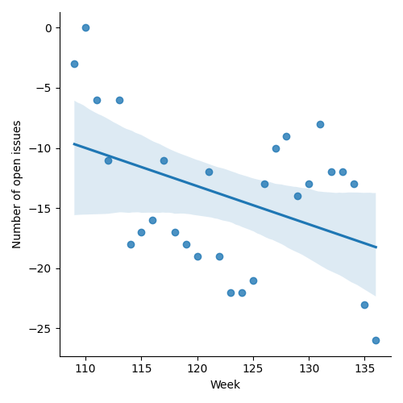
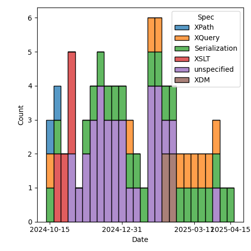
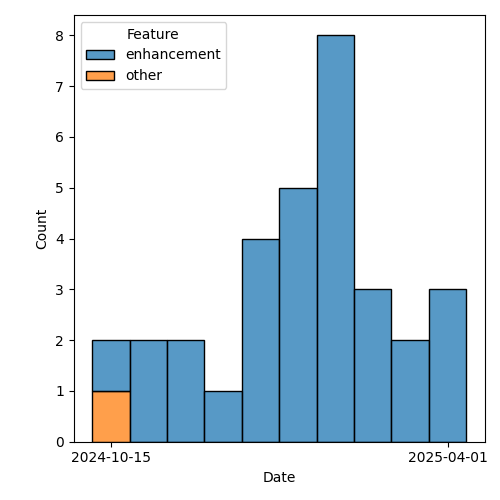

QT4 CG Meeting 119 Minutes 2025-04-29
Meeting index / QT4CG.org / Dashboard / GH Issues / GH Pull Requests
Table of Contents
- Minutes
- Summary of new and continuing actions
[1/7] - 1. Administrivia
- 2. Technical agenda
- 2.1. Review of pull requests
- 2.2. PR #1883/1894: fn:chain and fn:compose
- 2.3. PR #1587: 557 Add fn:unparsed-binary function
- 2.4. PR #1961: Attempt to show that xsl:record allows extra attributes
- 2.5. PR #1933: 1271 fn:xsd-validator() function
- 2.6. PR #1956: 1954 (part) Private variables and functions don't need to be in the module namespace
- 3. Any other business
- 4. Adjourned
Minutes
Approved at meeting 120 on 6 May 2025.
Summary of new and continuing actions [1/7]
[ ]QT4CG-082-02: DN to work with NW to come to agreement on the fn:ranks proposal[ ]QT4CG-107-05: JLO and DN to consider a proposal for system defined records.[ ]QT4CG-112-01: JLO to propose a concrete example that uses “.” in a ~%method~s.[ ]QT4CG-116-01: Add a specific error code for unsupported options on doc and doc-available[ ]QT4CG-118-01: MK to make an incorrect type raise an error in #1906[X]QT4CG-119-01: NW will add a bit of prose about * and then merge the PR 1961[ ]QT4CG-119-02: MK to add a note about how schema composition is done for multiple options
1. Administrivia
1.1. Roll call [10/13]
Regrets: JWL
[X]David J Birnbaum (DB)[X]Reece Dunn (RD)[ ]Sasha Firsov (SF)[X]Christian Grün (CG)[X]Joel Kalvesmaki (JK)[X]Michael Kay (MK)[X]Juri Leino (JLO)[ ]John Lumley (JWL)[X]Dimitre Novatchev (DN)[X]Wendell Piez (WP)[ ]Ed Porter (EP)[X]Bethan Tovey-Walsh (BTW)[X]Norm Tovey-Walsh (NW) Scribe. Chair.
1.2. Accept the agenda
Proposal: Accept the agenda.
Accepted.
1.2.1. Status so far…
These charts have been adjusted so they reflect the preceding six months of work.

Figure 1: “Burn down” chart on open issues

Figure 2: Open issues by specification

Figure 3: Open issues by type
1.3. Approve minutes of the previous meeting
Proposal: Accept the minutes of the previous meeting.
Accepted.
1.4. Next meeting
The next meeting is scheduled for 6 May 2025.
JWL gives regrets.
1.5. Review of open action items [5/10]
(Items marked [X] are believed to have been closed via email before this agenda was posted.)
[ ]QT4CG-082-02: DN to work with NW to come to agreement on the fn:ranks proposal[ ]QT4CG-107-05: JLO and DN to consider a proposal for system defined records.[ ]QT4CG-112-01: JLO to propose a concrete example that uses “.” in a ~%method~s.[X]QT4CG-113-02: NW to investigate a way to show extra attributes in the syntax summary.[X]QT4CG-115-02: JWL to write a few tests for xsl:record[ ]QT4CG-116-01: Add a specific error code for unsupported options on doc and doc-available[X]QT4CG-116-03: NW to review the star/plus/delta symbols in the ToC. (See 1838)[ ]QT4CG-118-01: MK to make an incorrect type raise an error in #1906[X]QT4CG-118-02: DN to open an issue about methods in records[X]QT4CG-118-03: NW to make sure compose/chain and binary are on the agenda for next week
1.6. Review of open pull requests and issues
This section summarizes all of the issues and pull requests that need to be resolved before we can finish. See Technical Agenda below for the focus of this meeting.
1.6.1. Blocked
1.6.2. Merge without discussion
The following PRs are editorial, small, or otherwise appeared to be uncontroversial when the agenda was prepared. The chairs propose that these can be merged without discussion. If you think discussion is necessary, please say so.
- PR #1950: 1704 Add rules/notes for BOM and related topics
- PR #1945: 1568 unicode case blind collation
- PR #1906: 1797 elements-to-maps-conversion-plan function
Proposal: merge without discussion.
Accepted.
1.6.3. Close without action
It has been proposed that the following issues be closed without action. If you think discussion is necessary, please say so.
- Issue #1844: Drop mapping arrow operator
- Issue #1416: Key-value pairs: built-in record type `pair`
- Issue #1319: Specification Documents: Editors and Contributors
Proposal: close without further action
Accepted.
1.6.4. Substantive PRs
The following substantive PRs were open when this agenda was prepared.
- PR #1961: Attempt to show that xsl:record allows extra attributes
- PR #1959: 1953 (part) XSLT Worked example using methods to implement atomic sets
- PR #1956: 1954 (part) Private variables and functions don't need to be in the module namespace
- PR #1933: 1271 fn:xsd-validator() function
- PR #1894: Additional examples to fn:chain - in a new branch
- PR #1888: 366 xsl:package-location
- PR #1883: 882 Replace fn:chain by fn:compose
- PR #1587: 557 Add fn:unparsed-binary function
2. Technical agenda
2.1. Review of pull requests
2.2. PR #1883/1894: fn:chain and fn:compose
Related PRs:
- PR #1883: 882 Replace fn:chain by fn:compose
- PR #1894: Additional examples to fn:chain - in a new branch
Discussion:
- MK: We have two reasonably well defined functions, fn:chain and fn:compose.
They have a lot of overlapping functionality. Do we want chain, or compose, or
both, or neither?
- … I think the amount of overlap is such that we don’t want both.
- … fn:chain offers two things that compose doesn’t: it applies the function in addition to returning it.
- … The other thing is that it handles functions with arity greater than one.
- NW: Can you use partial function application to achieve chain with compose?
- JLO: Yes, I think so.
- … I did implement a chain like functions, and handling the edge cases was very complicated and had difficult error cases.
- … I prefer compose for this reason.
- DN: I want to thank MK for the analysis. If we just have to vote for this PR,
I think the question is wrong. First, it is devisive. This is lose-lose.
- … It is like asking the user to click on a single radio-button, when in fact the correct interface would be to present them with several check-boxes, each of which should be dealt with independently from the others.
DN shares a comment from PR 1890.
- DN: I have translated all of the fn:compose examples into fn:chain examples.
- … The statement that there’s no real difference in capability is obviously wrong.
- … The statement that you have to know a lot about the functions you’re chaining, is equally true for fn:compose.
- … You can use fn:chain with dynamic functions.
- … The example of how to replace something that uses chain with compose is complicated, ugly, and error prone.
- DN: The claim that this breaks the principle of substitutability:
if (function-arity($f) eq 1) then [ $x ]
else if ($x instance of array(*)) then $x
else array { $x }
- DN: Is wrong.
- … DN asserted that in the particular case where a function is expecting as input a sequence of items, and it is provided with a single array, this array is exactly one item of the expected sequence - as it should be! - and thus there is no violation of any expectation or of the substitutability principle.
- DN: Having both functions would be redundant. Would that be bad?
- … DN enumerated several examples from biology to high-tech where redundancy is a good and necessary feature and argued that redundancy is necessary for specialization.
- RD: Would it make sense to have some analysis on the comparison of functionality between the two.
- … Where the functionality is the same, could we see side-by-side examples?
- … Where the functionality is different, see how those look?
- … And some examples of substitutibility?
- MK: That post was my attempt to do that.
- … Do you return a function or also apply it? I don’t think that’s a very substantive difference.
- RD: With returning a function you could cascade the application of compose or chain
- MK: Yes. If the function applies the compose function, then you can do a partial application to prevent it, conversly, if it doesn’t apply the function then you can easily apply it.
- MK: The more substantive difference is whether you apply the capability of
putting functions of arity greater than one into the chain.
- … That is a capability that adds some power but also adds a lot of complexity. My judgement in this particular case was that this wasn’t worth it in this case.
- DN: The convenience of chain is an important feature.
- NW: These are functions that 1% of 1% will ever use, so convenience is among a small group.
- CG: There are many languages that support fn:compose but none that support anything like fn:chain
- … DN are there any languages that support chain?
- DN: I don’t know of any, but I invented chain in response to the monstrous complexity of lambda functions that arose from our long operators.
- BTW: I’m confused. It seems to me that MK has made a pull request … shouldn’t we just be discussing that.
- MK: I’m not quite sure I’d express it that way. We do have four options. The intent of this PR was to express that we should have fn:compose instead of fn:chain, but if the will of the group is to go another way, we can do that.
- JLO: There’s another side effect of this PR. I think the pipeline operator is a better chain.
- DN: We should be asked four questions instead of one.
Some discussion of the status quo.
- RD: In terms of compose, that’s similar to other language features, it would be good to add. I’m less sure about chain.
Straw poll:
| Option | Votes |
|---|---|
| fn:chain (only) | 0 |
| fn:compose (only) | 6 |
| both | 3 |
| neither | 0 |
We’ll come back to this next week for a short discussion and then some resolution.
2.3. PR #1587: 557 Add fn:unparsed-binary function
See PR #1587
- NW: What’s left to do on this one?
- MK: This has been dormant for a while.
Proposal: merge this PR?
Accepted.
2.4. PR #1961: Attempt to show that xsl:record allows extra attributes
See PR #1961
- NW: This was my attempt to address an action.
- MK: Looks okay to me.
Proposal: merge this PR?
Accepted.
ACTION: QT4CG-119-01: NW will add a bit of prose about * and then merge the PR 1961
2.5. PR #1933: 1271 fn:xsd-validator() function
See PR #1933
MK introduces the design of the new function.
- MK: It allows you to compose the schema through any of a variety of components.
- MK: If you ask for a binary answer, you don’t have to have compatible type annotations.
- MK: The validation function returns a map.
- MK: Information about URIs and line and column numbers isn’t in the data model but the implementation my be able to provide it.
- JK: What are the rules if you populate all five of the options?
- MK: You use them all and taken together they must provide a valid schema.
- JK: It might be good to put a note in about this.
ACTION: QT4CG-119-02: MK to add a note about how schema composition is done for multiple options
Some discussion of how XML Schema defines schemas and schema composition.
- JLO: Is this marked as being part of a schema aware processor?
- MK: The F&O spec doesn’t have conformance profiles. Instead, it says it’s a dynamic error.
Some discussion of whether this could or should be a static error instead.
Proposal: merge this PR?
Accepted.
2.6. PR #1956: 1954 (part) Private variables and functions don't need to be in the module namespace
See PR #1956
- MK: This removes a restriction that never seemed necessary.
- … It replaces it with a new rule about public names.
- MK: This was triggered by the fact that I tried to make an example and I tripped over it.
- CG: If you have variables, you don’t need a namespace at all.
- MK: Right.
- JLO: Can I have a function called foo()? (Not in a namespace.) Can you now use local in libraries?
- MK: Yes.
Proposal: merge this PR?
Accepted.
3. Any other business
None heard.